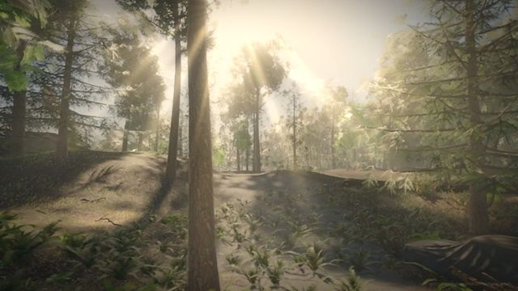
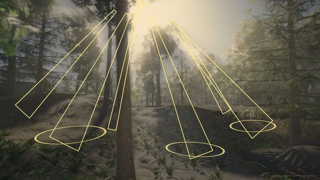
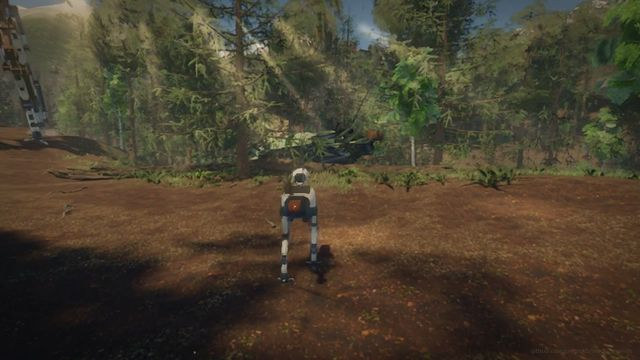
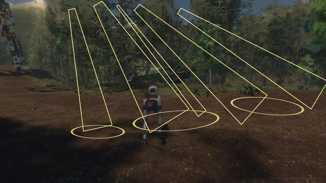
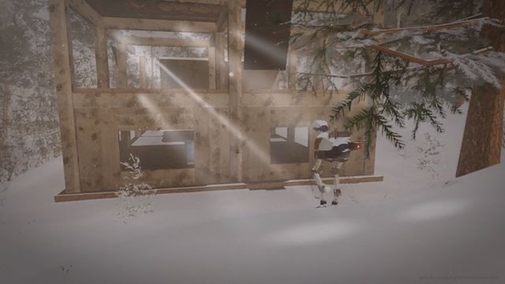
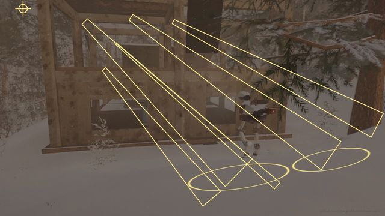

작업 흐름
- 입력
- 빛이 필요한 작품의 장면(캔버스 · MP4 · 스틸)과 원하는 빛(시간대, 들어오는 곳, 장면에서 할 일)
- 브리프
- 장면마다 해의 위치, 빛이 지나는 틈, 빛줄기 · 빛 고임 수와 자리, 색과 세기, 카메라 움직임
- 플랜
- 마스크 보기에서 해 · 빛줄기 · 빛 고임 배치, 자동 빛줄기 · 후광 · 그늘 · 색보정, 움직이는 장면은 키프레임
- 검사
- 빛줄기가 해에서 뻗는지, 날아간 흰색 ≤ 2 %, 그림자 유지, 변화량 1.5–18 %, 같은 시각 같은 그림
- 출력
- 작품 페이지에 겹친 캔버스(매 프레임
lp.draw()), 빛을 얹은 MP4 · 스틸
cd light-pass
node scripts/check.mjs examples/forest-path examples/walker-clearing examples/snow-cabin --sheet out/sheet.jpg
node scripts/apply.mjs examples/forest-path/input.jpg examples/forest-path/plan.json out/forest-lit.jpg
node scripts/apply.mjs shot.mp4 plan.json out/shot-lit.mp4 --from 2 --to 6
python3 -m http.server 8000 # /examples/live/요구 사항: WebGL 2 브라우저, 오프라인 적용은 Node 18+ · Playwright Chromium · ffmpeg (GPU 없이 동작). 단계별 순서는 SKILL.md에 있습니다.
샘플
세 장면은 machine-wilds 영화의 프레임에 장면마다 따로 설계한 빛을 얹은 결과와 마스크 보기입니다. 카드를 누르면 라이브 데모가 그 장면으로 열립니다.
장면마다 설계한 빛 examples/
같은 효과라도 해의 위치, 빛이 지나는 틈, 색과 세기는 장면의 브리프에서 정합니다.

결과 · 아침숲길forest-path
나무줄기 양옆 틈으로 빛줄기 4개와 가는 빛 2개, 길 위 빛 고임 3곳

마스크 보기숲길의 빛 배치--view mask
빛줄기 쐐기와 빛 고임 타원, 자동 빛줄기는 희미하게

결과 · 오후빈터의 물떼새walker-clearing
화면 밖 왼쪽 위의 해, 어두운 숲 띠를 지나는 빛줄기, 발치의 빛 고임

마스크 보기빈터의 빛 배치--view mask
해가 화면 밖이라 십자 없이, 빛줄기는 한 방향으로

결과 · 겨울눈 오두막snow-cabin
차가운 낮은 해, 오두막 뼈대 틈만 빛 통로로 제한, 차가운 색보정

마스크 보기오두막의 빛 배치--view mask
해는 왼쪽 위 모서리, 빛줄기는 뼈대 틈에서 출발
다른 작품에 실시간으로 examples/live/
캔버스로 그리는 작품이 매 프레임 그린 뒤 lp.draw()를 부르면, 줄기가 지나갈 때마다 자동 빛줄기가 틈을 따라 바뀝니다.
실제 작품
예제 장면은 machine-wilds 영화의 프레임이고, 방법은 아래 X 게시물에서 왔습니다.
링크
- SKILL.md 워크플로
- 폴더 lib · scripts · references · examples
- README.md 빠른 시작
- references/PLAN.md 플랜의 모든 필드와 배치 순서
- references/BRIEF.md 장면별 브리프와 검토 질문
- references/LESSONS.md 겪은 문제와 해결
- references/SOURCE.md 출처